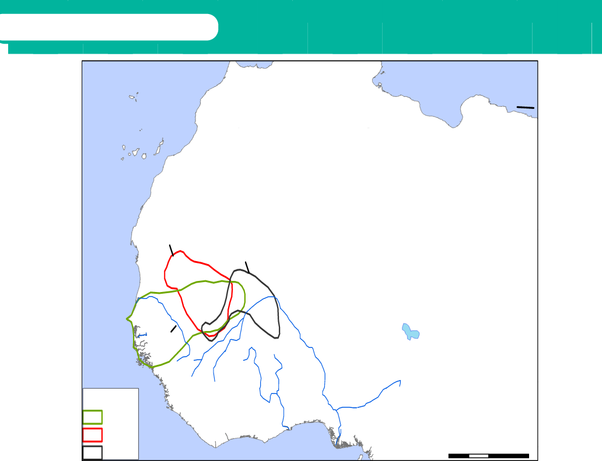

Ghana Empire
The empire of Ghana was located in the southern border region of modern-day Mauritania and Mali, between the bend of the Niger and Senegal rivers. This empire rose in the 5th Century after several small states were brought together through war. The founders of the empire were the Soninke people. The capital of the Ghana Empire was Kumbi Saleh and the title of the king was Tunka or Ghana. The towns located near the Ghana Empire were Walata, Awdaghust-also known as Audoghast, Timbuktu, Tichitt, and Jenne.
Factors for the rise of Ghana Empire
The factors that led to the rise of the Ghana Empire were not different greatly from those of Buganda, in East Africa. The following were the factors which led to the rise of Ghana Empire.
Good geographical position: Ghana was at the intersection of many Trans-Saharan trade routes. It played an intermediary role in this trade. All trade goods from the